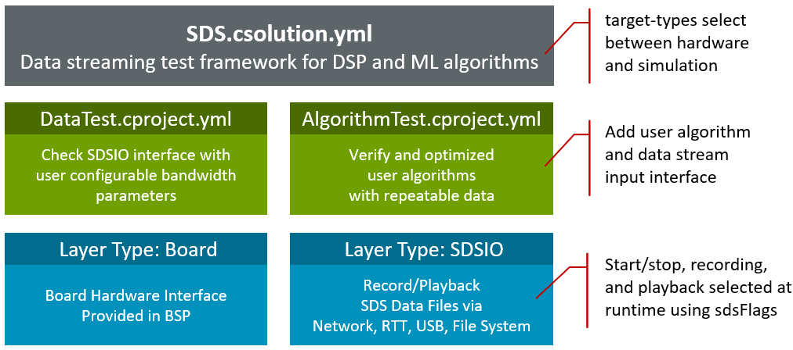
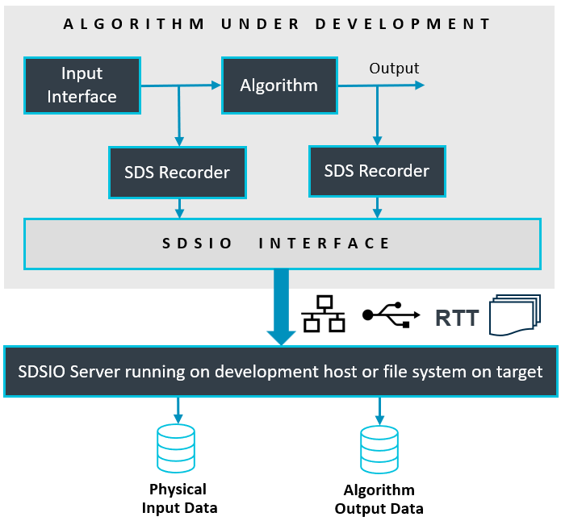
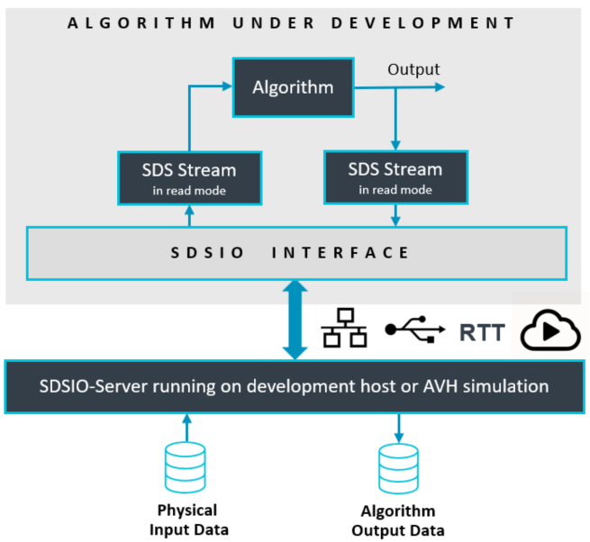
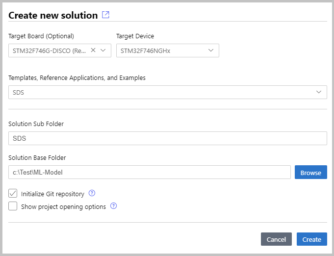
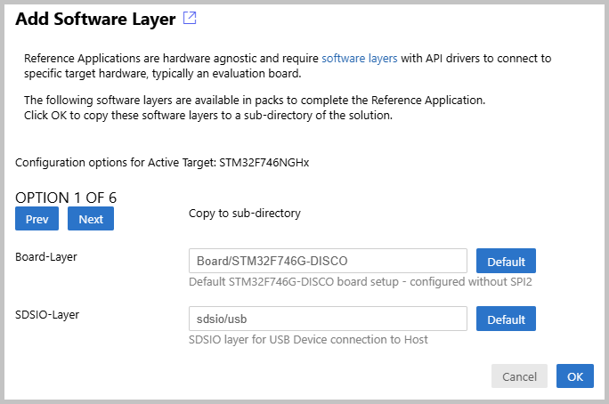
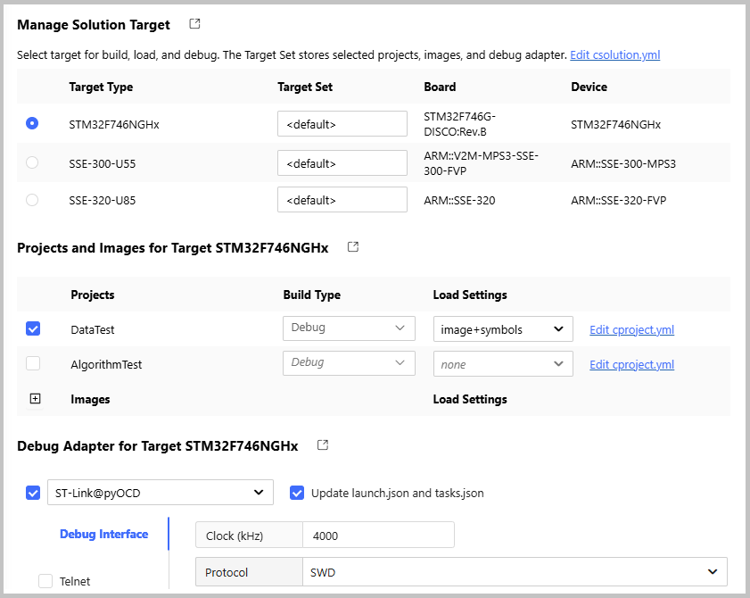

SDS Template Application
The SDS template application is a test framework for DSP and ML algorithms. It supports recording and playback of real-world data streams on physical hardware or simulation models using Arm Virtual Hardware (FVP), feeding a user algorithm under test. The real-world data streams are captured in SDS data files. This enables multiple use cases:
- Validate and optimize algorithms using playback. This makes it possible to repeat test cases with the same data stream.
- The captured data streams can be labeled and used as a training dataset for AI models in MLOps systems.
The SDS template application is implemented as a CMSIS-Toolbox Reference Application. It is hardware-agnostic and requires an SDSIO-Layer and a Board-Layer with drivers for the target hardware.
An SDSIO-Layer connects the SDS template application to a communication interface for SDS file I/O operations.
For hardware targets, the following SDSIO interfaces are available as pre-configured software layers:
- Ethernet Interface using the MDK-Middleware Network component.
- USB Bulk Interface using the MDK-Middleware USB component.
- RTT (Real-Time Transfer) using the SEGGER RTT component for I/O via the debug adapter.
- Memory Card Interface using the MDK-Middleware File System component.
With a custom SDSIO interface, alternative I/O configurations are possible.
SDS Template Structure
The structure of the SDS template application is shown below. Two projects let you choose between a data communication test and a user algorithm test. Three target types are available, allowing the test application to be deployed either on hardware (an evaluation board) or on one of two AVH FVP simulation models.
A standard board layer, provided by several BSPs, implements the hardware interface. For communication, the SDSIO layer uses the MDK-Middleware or (for the AVH FVP target) a virtual simulation interface (VSI).

The Debug and Release build types differ only in the optimization level and the amount of debug information printed.
Both build types support recording and playback, controlled via sdsFlags. The sdsFlags value can be modified by the SDS application (using the function sdsFlagsModify) or by the SDSIO-Server, making it easy to switch between Record Mode and Playback Mode.
Note
The template-based file system implementation natively supports recording mode only. Playback mode can be enabled by adapting the provided template code. For example, an additional button on the board can be used to toggle between recording and playback modes.
Record Mode
Record mode captures the input data stream and the algorithm output data stream simultaneously.

Playback Mode
Playback mode replays the input data stream while recording the algorithm output data stream at the same time. The test application can run either on hardware (evaluation board) or on an AVH FVP (simulation model). Because the input data stream can be repeated, it enables consistent verification and optimization of the algorithm while capturing the resulting output data stream.

Working with the SDS Template
The SDS template application and SDSIO interface layers are part of the SDS pack.
Several Board Support Packs (BSP) contain board layers that support the required API interfaces. Refer to the Overview page of the pack to check the Provided connection API Interface of the layers. The table below lists the required API interfaces that should be provided by the Board-Layer.
| Required API Interface | Description |
|---|---|
| SDSIO File System | |
| CMSIS_MCI | CMSIS-Driver MCI interface to memory card. |
| CMSIS_VIO, STDOUT, STDERR | For user button and printf output. |
| SDSIO Network | |
| CMSIS_ETH | CMSIS-Driver Ethernet MAC/PHY interface. |
| CMSIS_VIO, STDOUT, STDERR | For user button and printf output. |
| SDSIO USB Device | |
| CMSIS_USB_Device | CMSIS-Driver USB Device interface. |
| CMSIS_VIO, STDOUT, STDERR | For user button and printf output. |
Note
- RTT has no API interface requirements to a board layer and may be used when no compatible board layer is available.
- When no board layer is available, it is possible to create a compatible board layer.
Using VS Code
This section explains how to use SDS template application with the Arm CMSIS Solution for VS Code. This extension is for example part of the Keil Studio.
The example below uses the STM32F746G-DISCO board, which provides interfaces for all SDSIO communication interfaces.
Install Required Packs
To make the software components available, install the SDS pack and the pack for the selected evaluation board, for example with:
>cpackget add ARM::SDS
>cpackget add Keil::STM32F746G-DISCO_BSP
Create New Solution
In the Create a new solution dialog, select the target board and the SDS reference application.

After the csolution project loads, VS Code displays a dialog where you can select a compatible software layer and an installed compiler toolchain.
Note
- If no compatible software layer is available for SDS, use the
V2M-MPS3-SSE-300-FVPboard. Then adaptSDS.csolution.ymland create a software layer for your target hardware as outlined in Compile for Custom Hardware. The layer: sdsio_rtt has minimal requirements because it uses the debug adapter as the communication interface to the SDSIO-Server.

Note
- The Add Software Layer dialog only appears when the BSP contains a board layer with compatible API Interfaces (see next section).
- ST board layers are configured for the Arm Compiler (AC6) using STM32CubeMX. However, it is easy to reconfigure for different compilers. The steps are provided in the BSP overview.
Build the Template Application
The SDS template application contains three targets (an evaluation board and two AVH FVP simulation models) and two projects:
- DataTest is a data communication test between target and SDSIO-Server or file system.
- AlgorithmTest allows you to add the DSP or ML algorithm that should be tested.
Use the CMSIS:Manage Solution Settings command to select the project you want to explore. Start with DataTest, which should work out of the box on target hardware.

Once the project is selected and the debug adapter is configured, save the solution and use the build command to generate the template application. Then download the application to the selected target.
Compile for Custom Hardware
The steps to add a custom hardware configuration are:
- Open the
*.csolution.ymlfile and add a newtarget-type.
packs:
- pack: <DFP for your hardware> # use keil.arm.com/packs to search for packs
target-types:
- type: MyHardware
device: STM32U535CBTx
variables:
- Board-Layer: $SolutionDir()$/Board/MyHardware/Board.clayer.yml
- SDSIO-Layer: $SolutionDir()$/sdsio/rtt/sdsio_rtt.clayer.yml
- Add a board layer that implements the API interfaces described above.
Note
- You may copy an existing board layer as starting point. But typically these board layers support a range of reference applications and contain driver API interfaces that may be removed.
- The step above allows also manual configuration without using the VS Code IDE.
Using DataTest
The DataTest project validates the communication channel.
Recording/playback on Hardware Target
- Select the
STM32F746G-DISCOtarget with ProjectDataTestand Build TypeDebugto record/playback SDS data files. - Configure the file
datatest.sdsio.ymlfor your selected communication interface. - Start the SDSIO-Server with
python sdsio-server.py -c datatest.sdsio.yml. - Build and Run the application.
- Use SDS-Check to verify correctness of the recording.
Recording
Activate recording from the SDSIO-Server by pressing the R key. To stop recording, press the S key.
Alternatively, recording can be started or stopped by pressing the user button on the board.
This run should generate the files Test_In.1.sds and Test_Out.1.sds in the folder datatest/SDS Recordings. The DataTest project is configured to record 1000 data records at an interval of 10 ms.
To verify correctness of the recording using the SDS-Check utility, use the following commands:
python sds-check.py -i Test_In.1.sds
python sds-check.py -i Test_Out.1.sds
When recording is started again, new files with different names are created: Test_In.2.sds and Test_Out.2.sds.
Note
- Refer to Theory of Operation - Filenames for more information.
Playback
Activate the playback from the SDSIO-Server by pressing the P key.
This run should read the Test_In.0.sds file and generate the Test_Out.0.p.sds file in the folder datatest/SDS Recordings. The Test_Out.0.sds file generated during recording is identical to Test_Out.0.p.sds, which is generated in playback mode.
To verify correctness of the recording using the SDS-Check utility, use the following command:
python sds-check.py -i Test_Out.0.p.sds
Compare the output files Test_Out.0.sds and Test_Out.0.p.sds with any program that can compare binary files. If the communication is correct, the files should be identical.
Configure Bandwidth for DataTest
The DataTest project uses a fixed algorithm to verify the communication interface. In datatest/algorithm_config.h, you can configure bandwidth and interval to match the requirements of the algorithm under test.
Playback on Simulation Model
- Select the target
SSE-300-U55(orSSE-320-U85) with ProjectDataTestand Build TypeDebugto play back SDS data files. - Build and Run the application.
- Use SDS-Check to verify correctness of the files recorded during playback.
By default, the Template application includes a datatest.sdsio.yml configuration file that specifies playback of the Test_In.0.sds file,
while new output recordings are stored in the Test_Out.0.p.sds file.
Refer to SDSIO control file: sdsio.yml for more information and configuration of playback files using the play: node.
To verify correctness of the recording using the SDS-Check utility, use the following command:
python sds-check.py -i Test_Out.0.p.sds
Tip
Compare the output files Test_Out.0.sds and Test_Out.0.p.sds with any program that can compare binary files. If the communication is correct, the files should be identical.
Note
- Recording mode is not available when using Simulation Model.
Using AlgorithmTest
The AlgorithmTest project allows you to add custom algorithms for testing. It is prepared for recording and playback of SDS data files.
Add User Algorithm
In the SDS template application, these files must be modified to integrate the DSP/ML algorithm under test:
algorithm/algorithm_config.hconfigures the block size of data streams.algorithm/algorithm_user.cis the interface to the DSP/ML algorithm under test.algorithm/data_in_user.cis the interface to the physical data source.
Example Projects
Configured variants of the SDS template application are provided in a separate GitHub repository github.com/Arm-Examples/sds-examples. These examples show the usage of the SDS-Framework with real-world devices and use cases.
For details, refer to the README.md files included with the example configurations.